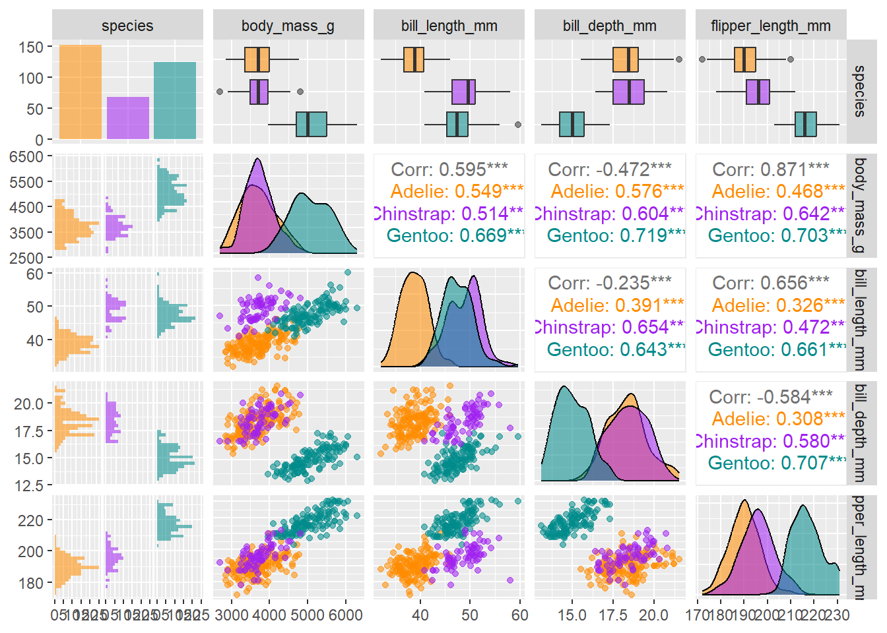

Chapter 4 Visualization

In this section, we’ll explore visualization methods in R. Visualization has been a key element of R since its inception, since visualization is central to the exploratory philosophy of the language. See https://bookdown.org/igisc/EnvDataSci/ for some examples and setting parameters in base R, but we’ll focus on ggplot2.
4.1 ggplot2
The gpplot2 package, part of the tidyverse (and installed and loaded with tidyverse)is based on the Grammar of Graphics because it provides considerable control over your graphics while remaining fairly easily readable, as long as you buy into its grammar.
The ggplot2 app (and its primary function ggplot) looks at three aspects of a graph:
- data : where are the data coming from?
- geometry : what type of graph are we creating?
- aesthetics : what choices can we make about symbology and how do we connect symbology to data?
As with other tidyverse and RStudio packages, find the ggplot2 cheat sheet at https://www.rstudio.com/resources/cheatsheets/
4.2 Summary statistical graphics
Being a language that strongly supports statistical analysis, R provides quite an array of ways of exploring and analyzing data, and graphics are an important part of that. The visualization chapter of https://bookdown.org/igisc/EnvDataSci/ includes much more on these methods, and many of these set up the statistical modeling parts of that book. Looking at summary statistics and creating graphs of our data variables will also be important for mapping and other GISc methods, so we’ll look at a few examples, but you can explore further in the larger book.
4.2.1 Plotting one variable
The ggplot function provides plots of single and multiple variables, using various coordinate systems (including geographic). We’ll start with just plotting one variable, which might be continuous – where we might want to see a histogram, density plot, or dot plot – or discrete – where we might want to see something like a a bar graph, like the first example below (Figure 4.1).
We’ll look at a study of Normalized Difference Vegetation Index from a transect across a montane meadow in the northern Sierra Nevada, derived from multispectral drone imagery (Davis et al. 2020).
library(igisci)
library(tidyverse)
summary(XSptsNDVI)## DistNtoS elevation vegetation geometry
## Min. : 0.0 Min. :1510 Length:29 Length:29
## 1st Qu.: 37.0 1st Qu.:1510 Class :character Class :character
## Median :175.0 Median :1511 Mode :character Mode :character
## Mean :164.7 Mean :1511
## 3rd Qu.:275.5 3rd Qu.:1511
## Max. :298.8 Max. :1511
## NDVIgrowing NDVIsenescent
## Min. :0.3255 Min. :0.1402
## 1st Qu.:0.5052 1st Qu.:0.2418
## Median :0.6169 Median :0.2817
## Mean :0.5901 Mean :0.3662
## 3rd Qu.:0.6768 3rd Qu.:0.5407
## Max. :0.7683 Max. :0.7578ggplot(XSptsNDVI, aes(vegetation)) +
geom_bar()FIGURE 4.1: Simple bar graph of meadow vegetation samples
4.2.2 Histogram
Histograms are very useful for looking at the distribution of continuous variables (Figure 4.2). We’ll start by using a pivot table (these will be discussed in the next chapter, on data transformation.)
XSptsPheno <- XSptsNDVI %>%
filter(vegetation != "pine") %>%
pivot_longer(cols = starts_with("NDVI"),
names_to = "phenology",
values_to = "NDVI") %>%
mutate(phenology = str_sub(phenology, 5, str_length(phenology)))XSptsPheno %>%
ggplot(aes(NDVI)) +
geom_histogram(binwidth=0.05)
FIGURE 4.2: Distribution of NDVI, Knuthson Meadow
Histograms can be created in a couple of ways, one the conventional histogram that provides the most familiar view, for instance of the “bell curve” of a normal distribution (Figure 4.3).
sierraData %>%
ggplot(aes(TEMPERATURE)) +
geom_histogram(fill="dark green")
FIGURE 4.3: Distribution of Average Monthly Temperatures, Sierra Nevada
Another way is a cumulative histogram, described in https://bookdown.org/igisc/EnvDataSci/ . Another approach is a density plot, which is more of a continuous type of histogram, like the following example which also applies an alpha setting to compare two distributions:
XSptsPheno %>%
ggplot(aes(NDVI, fill=phenology)) +
geom_density(alpha=0.2)FIGURE 4.4: Comparative density plot using alpha setting
4.2.3 Other statistical graphics
Some other statistical graphics that are useful are boxplots, scatter plots, trend lines, and pairs plots.
Tukey boxplots provide another way of looking at the distributions of continuous variables. Typically these are stratified by a factor, such as site in the euc/oak study (Figure 4.5):
ggplot(data = tidy_eucoak) +
geom_boxplot(aes(x = site, y = runoff_L))FIGURE 4.5: Boxplot of runoff by site
And then as we did above, we can communicate more by coloring by tree type. Note that this is called within the aes() function (Figure 4.6).
ggplot(data = tidy_eucoak) +
geom_boxplot(aes(x=site, y=runoff_L, color=tree))FIGURE 4.6: Runoff at Bay Area Sites, colored as eucalyptus and oak
When we get to statistical models, the first one we’ll look at is a simple linear model. It’s often useful to display this as a trend line, and this can be done with ggplot2’s geom_smooth() function, specifying the linear model “lm” method. By default, the graph displays the standard error as a gray pattern (Figure 4.7).
sierraFeb %>%
ggplot(aes(TEMPERATURE,ELEVATION)) +
geom_point(color="blue") +
geom_smooth(color="red", method="lm")FIGURE 4.7: Trend line with a linear model
sierraFeb %>%
dplyr::select(ELEVATION:TEMPERATURE) %>%
pairs()FIGURE 4.8: Pairs plot for Sierra Nevada stations variables
Visualizing soil CO2 data with a box plot
In a study of soil CO2 in the Marble Mountains of California (Davis, Amato, and Kiefer 2001), we sampled extracted soil air (Figure 4.9) in a 11-point transect across Marble Valley in 1997 (Figure 4.10). Again, a Tukey boxplot is useful for visualization (Figure 4.11).
Note that in this book you’ll often see CO2 written as CO2. These are both meant to refer to carbon dioxide, but I’ve learned that subscripts in figure headings don’t always get passed through to the LaTeX compiler for the pdf/printed version, so I’m forced to write it without the subscript. Similarly CH4 might be written as CH4, etc. The same applies often to variable names and axis labels in graphs, though there are some workarounds.
FIGURE 4.9: Marble Valley, Marble Mountains Wilderness, California
FIGURE 4.10: Marble Mountains soil gas sampling sites, with surface topographic features and cave passages
soilCO2 <- soilCO2_97
soilCO2$SITE <- factor(soilCO2$SITE) # in order to make the numeric field a factor
ggplot(data = soilCO2, mapping = aes(x = SITE, y = CO2pct)) +
geom_boxplot()FIGURE 4.11: Visualizing soil CO2 data with a Tukey box plot
4.3 Plotting Two Variables
See https://bookdown.org/igisc/EnvDataSci/ for methods of graphing two variables, either both continuous or with one discrete.
4.3.1 Color systems
There’s a lot to working with color, with different color schemes needed for continuous data vs discrete values, and situations like bidirectional data. We’ll look into some basics, but the reader is recommended to learn more at sources like https://cran.r-project.org/web/packages/RColorBrewer/index.html or https://colorbrewer2.org/ or just Googling “rcolorbrewer” or “colorbrewer” or even “R colors”.
4.3.1.1 Specifying colors to use for a graphical element
When a color is requested for an entire graphical element, like geom_point or geom_line, and not in the aesthetics, all feature get that color. In the following graph the same x and y values are used to display as points in blue and as lines in red (Figure 4.12).
sierraFeb %>%
ggplot(aes(TEMPERATURE,ELEVATION)) +
geom_point(color="blue") +
geom_line(color="red")FIGURE 4.12: Using aesthetics settings for both points and lines
Note the use of pipe to start with the data then apply ggplot. This is one approach for creating graphs, and provides a fairly straightforward way to progress from data to visualization.
4.3.1.2 Color from variable, in aesthetics
If color is connected to a variable within the aes() call, a color scheme is chosen to assign either a range (for continuous) or a set of unique colors (for discrete). In this graph, color is defined inside aes, so is based on COUNTY (Figure 4.13).
ggplot(data=sierraFeb) +
geom_point(aes(TEMPERATURE, ELEVATION, color=COUNTY))FIGURE 4.13: Color set within aes()
Note that counties represent discrete data, and this is detected by ggplot to assign an appropriate color scheme. Continuous data will require a different palette (Figure 4.14).
library(tidyverse); library(lubridate); library(igisci)
sagehen <- read_csv(ex("sierra/sagehen_dv.csv"))
ggplot(data=sagehen, aes(x=Q, y=EC, col=waterTmax)) + geom_point() +
scale_x_log10() + scale_y_log10()FIGURE 4.14: Streamflow (Q) and specific electrical conductance (EC) for Sagehen Creek, colored by temperature
River map and profile
We’ll build a riverData dataframe with x and y location values and elevation. We’ll need to start by creating empty vectors we’ll populate with values in a loop: d, longd, and s are assigned an empty value double(), then slope s (since it only occurs between two points) needs one NA value assigned for the last point s[length(x] to have the same length as other vectors.
library(tidyverse)
x <- c(1000, 1100, 1300, 1500, 1600, 1800, 1900)
y <- c(500, 780, 820, 950, 1250, 1320, 1500)
elev <- c(0, 1, 2, 5, 25, 75, 150)
d <- double() # creates an empty numeric vector
longd <- double() # ("double" means double-precision floating point)
s <- double()
for(i in 1:length(x)){
if(i==1){longd[i] <- 0; d[i] <-0}
else{
d[i] <- sqrt((x[i]-x[i-1])^2 + (y[i]-y[i-1])^2)
longd[i] <- longd[i-1] + d[i]
s[i-1] <- (elev[i]-elev[i-1])/d[i]}}
s[length(x)] <- NA # make the last slope value NA since we have no data past it,
# and so the vector lengths are all the same
riverData <- bind_cols(x=x,y=y,elev=elev,d=d,longd=longd,s=s)
riverData## # A tibble: 7 × 6
## x y elev d longd s
## <dbl> <dbl> <dbl> <dbl> <dbl> <dbl>
## 1 1000 500 0 0 0 0.00336
## 2 1100 780 1 297. 297. 0.00490
## 3 1300 820 2 204. 501. 0.0126
## 4 1500 950 5 239. 740. 0.0632
## 5 1600 1250 25 316. 1056. 0.236
## 6 1800 1320 75 212. 1268. 0.364
## 7 1900 1500 150 206. 1474. NAFor this continuous data, a range of values is detected and a continous color scheme is assigned (Figure 4.15). The ggplot scale_color_gradient function is used to establish end points of a color range that the data are stretched between (Figure 4.16). We can use this for many continuous variables, such as slope (Figure 4.17). The scale_color_gradient2 lets you use a mid color. Note that there’s a comparable scale_fill_gradient and scale_fill_gradient2 for use when specifying a fill (e.g. for a polygon) instead of a color (for polygons linked to the border).
ggplot(riverData, aes(x,y)) +
geom_line(mapping=aes(col=s), size=1.2) +
geom_point(mapping=aes(col=s, size=elev)) +
coord_fixed(ratio=1) + scale_color_gradient(low="green", high="red") +
ggtitle("Simulated river path, elevations, and slopes")FIGURE 4.15: Channel slope as range from green to red, vertices sized by elevation
ggplot(riverData, aes(longd,elev)) + geom_line(aes(col=s), size=1.5) + geom_point() +
scale_color_gradient(low="green", high="red") +
ggtitle("Longitudinal profile")FIGURE 4.16: Channel slope as range of line colors on a longitudinal profile
ggplot(riverData, aes(longd,s)) + geom_point(aes(col=s), size=3) +
scale_color_gradient(low="green", high="red") +
ggtitle("Slope by longitudinal distance upstream")FIGURE 4.17: Channel slope by longitudinal distance as scatter points colored by slope
4.4 Exercises: Visualization
Exercise 4.1 Create a bar graph of the counts of the species in the penguins data frame (Horst, Hill, and Gorman 2020). What can you say about what it shows?
Exercise 4.2 Use bind_cols in dplyr to create a tibble from built-in vectors state.abb and state.region, then use ggplot with geom_bar to create a bar graph of the four regions.
Exercise 4.3 Convert the built-in time series treering into a tibble tr using the tibble() function with the single variable assigned as treering = treering (or just specifying treering will also work for this simple example), then create a histogram, using that tibble and variable for the data and x settings needed. Attach a screen capture of the histogram. (Also, learn about the treering data by entering ?treering in the console and read the Help displayed.)
Exercise 4.4 Create a new tibble st using bind_cols with Name=state.name, Abb=state.abb, Region=state.region, and as_tibble(state.x77). Note that this works since all of the parts are sorted by state. From st, create a density plot from the variable Frost (number of days with frost for that state). What is the approximate modal value?
Exercise 4.5 From st create a a boxplot of Area by Region. Which region has the highest and which has the lowest median Area? Do the same for Frost.
Exercise 4.6 From st, compare murder rate (y is Murder) to Frost (as x) in a scatter plot, colored by Region.
Exercise 4.7 Add a trend line (smooth) with method=“lm” to your scatterplot, not colored by Region (but keep the points colored by region). What can you say about what this graph is showing you?